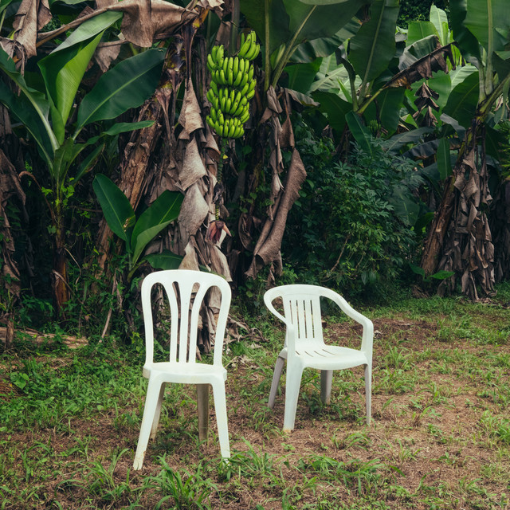
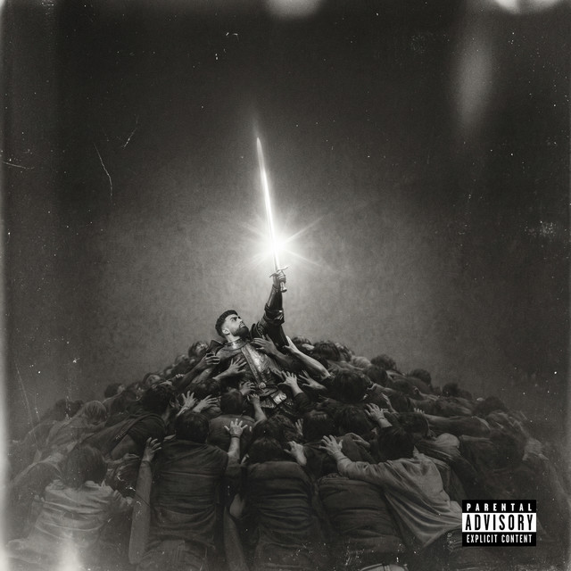
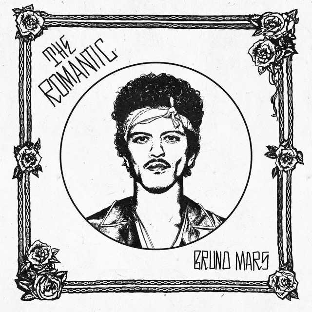
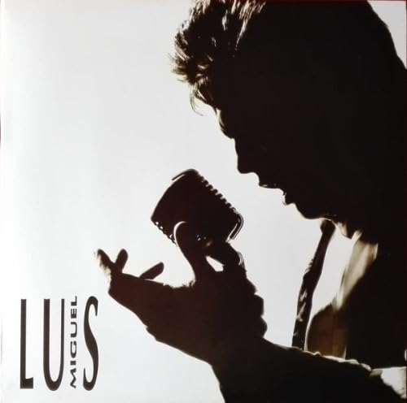
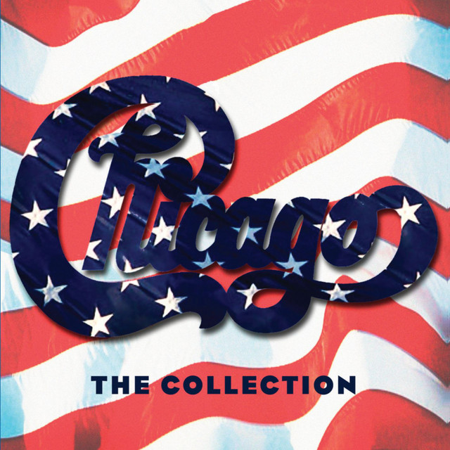
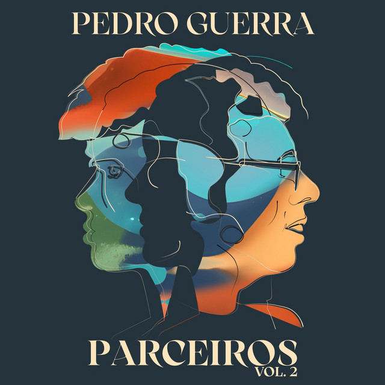
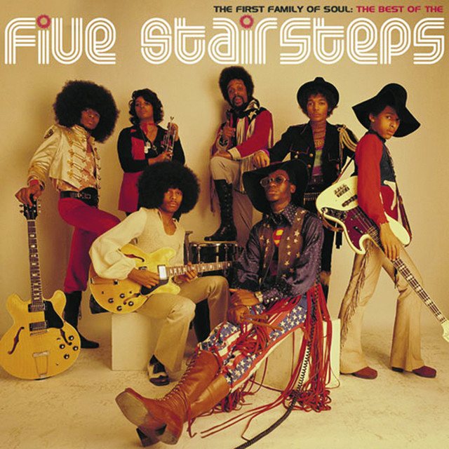

Dedicatorias
Las canciones que me traen algo de vos.
-

TuristaBad Bunny
-

Refe 1Jay Wheeler
-

Risk It AllBruno Mars
-

La BarcaLuis Miguel
-

Hard To Say I´m SorryChicago
-

Con Los Dos En La CabezaPedro Guerra, Cruzzi
-

Come BackThe Five Stairsteps
-
 Canción sorpresa 08
Canción sorpresa 08Artista por confirmar
Sorpresa 08Calculando…
-
Canción sorpresa 09
Artista por confirmar
Sorpresa 09Calculando…
-
Canción sorpresa 10
Artista por confirmar
Sorpresa 10Calculando…
-
Canción sorpresa 11
Artista por confirmar
Sorpresa 11Calculando…
-
Canción sorpresa 12
Artista por confirmar
Sorpresa 12Calculando…
-
 Sorpresa 13
Sorpresa 13Artista por confirmar
Sorpresa 13Calculando…
-
Sorpresa 14
Artista por confirmar
Sorpresa 14Calculando…
-
Sorpresa 15
Artista por confirmar
Sorpresa 15Calculando…
-
Canción sorpresa 16
Artista por confirmar
Sorpresa 16Calculando…
-
Canción sorpresa 17
Artista por confirmar
Sorpresa 17Calculando…
-
Canción sorpresa 18
Artista por confirmar
Sorpresa 18Calculando…